Este documento foi gerado a partir dos schemas Mongoose em
src/domains/*/schemas. O diagrama completo em Mermaid fica
em docs/diagrama-entidade-relacionamento.mmd.
Como o projeto usa MongoDB, as relacoes sao mantidas por campos
ObjectId. Relacoes polimorficas dependem de campos como
targetType e authorType.

| Collection | Entidade | Campos relacionais principais |
|---|---|---|
| users | Usuario | Referenciado por doacoes, campanhas, mensagens, notificacoes, equipe, auditoria e relatorios. |
| institutions | Instituicao | categoryIds, verification.verifiedByUserId |
| categories | Categoria | Referenciada por institutions.categoryIds. |
| institution_staff_memberships | Equipe da instituicao | institutionId, userId, invitedByUserId |
| campaigns | Campanha | institutionId, createdByUserId |
| donations | Doacao | donorUserId, institutionId, campaignId |
| payments | Pagamento | donationId, donorUserId, institutionId |
| delivery_proofs | Comprovante de entrega | donationId, confirmedByUserId |
| tax_receipts | Recibo fiscal | donationId, donorUserId, institutionId |
| donation_status_history | Historico de status | donationId, changedByUserId |
| tracking_events | Evento de rastreio | donationId, actorUserId |
| posts | Postagem | authorId, campaignId, institutionId |
| post_comments | Comentario | postId, userId, parentCommentId |
| post_reactions | Reacao | postId, userId |
| conversations | Conversa | participantIds, institutionId, campaignId |
| messages | Mensagem | conversationId, senderUserId, readBy.userId |
| notifications | Notificacao | userId |
| follows | Seguimento | followerUserId, targetId polimorfico. |
| reports | Denuncia | reporterUserId, reviewedByUserId, targetId polimorfico. |
| audit_logs | Auditoria | actorUserId, targetId polimorfico. |
| Origem | Destino | Campo | Cardinalidade |
|---|---|---|---|
| users | institution_staff_memberships | userId, invitedByUserId | 1:N |
| institutions | institution_staff_memberships | institutionId | 1:N |
| categories | institutions | categoryIds | 1:N |
| institutions | campaigns | institutionId | 1:N |
| users | campaigns | createdByUserId | 1:N |
| users | donations | donorUserId | 1:N |
| institutions | donations | institutionId | 1:N |
| campaigns | donations | campaignId | 1:N opcional |
| donations | payments, delivery_proofs, tax_receipts, status_history, tracking_events | donationId | 1:N |
| users | posts, comments, reactions, messages, notifications | authorId/userId/senderUserId | 1:N |
| conversations | messages | conversationId | 1:N |
| users | conversations | participantIds | N:N |
| users | follows | followerUserId | 1:N |
| institutions/campaigns | follows | targetId + targetType | 1:N polimorfico |
| users | reports/audit_logs | reporterUserId/reviewedByUserId/actorUserId | 1:N |
erDiagram
USERS ||--o{ INSTITUTION_STAFF_MEMBERSHIPS : userId
INSTITUTIONS ||--o{ INSTITUTION_STAFF_MEMBERSHIPS : institutionId
CATEGORIES ||--o{ INSTITUTIONS : categoryIds
INSTITUTIONS ||--o{ CAMPAIGNS : institutionId
USERS ||--o{ CAMPAIGNS : createdByUserId
USERS ||--o{ DONATIONS : donorUserId
INSTITUTIONS ||--o{ DONATIONS : institutionId
CAMPAIGNS ||--o{ DONATIONS : campaignId
DONATIONS ||--o{ PAYMENTS : donationId
DONATIONS ||--o{ DELIVERY_PROOFS : donationId
DONATIONS ||--o{ TAX_RECEIPTS : donationId
DONATIONS ||--o{ DONATION_STATUS_HISTORY : donationId
DONATIONS ||--o{ TRACKING_EVENTS : donationId
POSTS ||--o{ POST_COMMENTS : postId
POSTS ||--o{ POST_REACTIONS : postId
CONVERSATIONS ||--o{ MESSAGES : conversationId
USERS ||--o{ NOTIFICATIONS : userId
USERS ||--o{ FOLLOWS : followerUserId
INSTITUTIONS ||--o{ FOLLOWS : targetId
CAMPAIGNS ||--o{ FOLLOWS : targetId